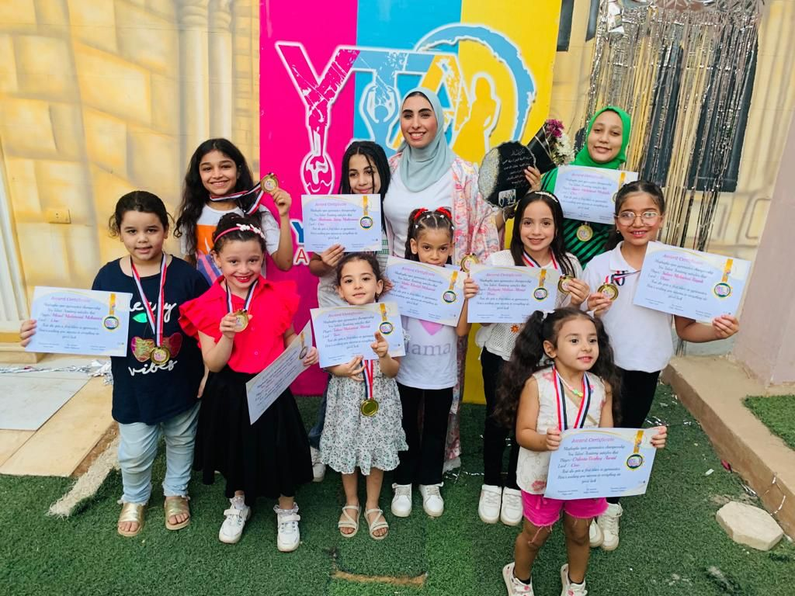
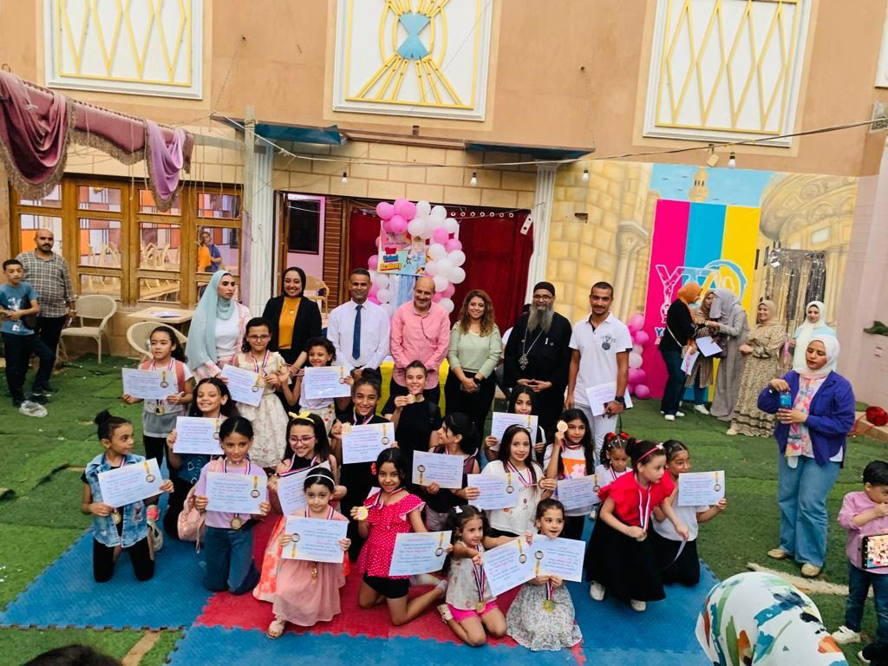

اهمية رياضة الجمباز
ا هي لعبة الجمباز؟ وهي رياضة تُجرّب القوة، والتوازن، والقدرة على ثني أجزاء الجسم وفعل حركات بهلوانية، كألعاب القوى والمصارعة، بدأ الناس بممارسة هذه الرياضة في اليونان القديمة، والتي تتضمن أداء بعض الحركات على مختلف الأجهزة، إذ أن كل جهاز يقوم بسلسلة من الحركات المختلفة.[١] فيديو قد يعجبك: أنواع لعبة الجمباز يوجد عدة أنواع لرياضة الجمباز وهي:[٢] الجمباز الفني ويتم هذا النوع باستخدام مجموعة من الأجهزة الخاصة، التي تختلف بين الرجال والنساء، حيث أن الرجال يستخدمون أجهزة مثل البساط الأرضي، وحصان والحلق، وطاولة القفز، والعقلة والمتوازي، أمّا النساء فيستخدمن عارضة التوازن، والبساط الأرضي. الجمباز الإيقاعي وهذا النوع مخصص للسيدات فقط، حيث تقوم اللاعبة باستعراض حركات إيقاعية بشكل جميل ورشيق وهي تحمل أداة بيدها، إما أن تكون كرة أو صولجان أو طوق أو شريط أو حبلاً. الجمباز الأكروباتيك "البهلواني" وهو نوع تدخل فيه المنافسة ويتم أداؤه ضمن مجموعات وشركاء، وتحتاج هذه الرياضة مرونة ودقة عالية، وتوازن بين الرقص والموسيقى المصاحبة. الجمباز الأيروبكس ويحتاج هذا النوع لأداء الحركات بقوة طبيعية وخفة وتنسيق، إذ يتحرّك الجسم بكل مرونة ورشاقة، حيث يقوم اللاعب بفعل هذه الحركات بتركيز كبير، كما ويتمتّع اللاعب بموهبة عالية؛ ليكون قادراً على أداء الحركات مع الموسيقى في فترة زمنية واحدة.
اهمية رياضة الجمباز
الجمباز العام لا يتقيد هذا النوع بقوانين محددة، ويتم أداؤه في المهرجانات الكبيرة كنوع من العروض الفنية. جمباز النط (الترامبولين) ويؤدي المتسابق في هذا النوع حركات أكروباتية، عن طريق القفز المتتابع لمسافات عالية في الهواء على جهاز يُطلق عليه الجهاز الارتدادي أو المنطّة (الترامبولين). الأجهزة المستخدمة في رياضة الجمباز يوجد عدد من الأجهزة المستخدمة في رياضة الجمباز نذكر منها ما يلي: أجهزة الإناث الحركات الأرضية (FLOOR EXERCISES). المتوازي مختلف الارتفاع (UNEVEN BARS). عارضة التوازن (BALANCE BEAM). منصة القفز (VAULT TABLE). أجهزة الذكور العقلة (PAR HORIZONTAL). الحركات الأرضية (FLOOR EXERCISES). المتوازي (PARALLEL BARS). حصان المقابض (POMMEL HORSE). منصة القفز (VAULT TABLE). الحلق (RINGS). فوائد لعبة الجمباز يوجد العديد من الفوائد لممارسة لعبة الجمباز وهي:[٣] زيادة القوة: رياضة الجمباز تتطلب تمارين وزن الجسم لتهيئة وتطوير الجزء العلوي والجزء السفلي منه.

اهمية رياضة الجمباز
الانضباط: رياضة الجمباز تنمي شعور الانضباط عند لاعبيه، فعلى سبيل المثال عندما يوجّه المدرب اللاعب لأداء التعديلات اللازمة، فإنه يتحلى بالانضباط. المهارات الاجتماعية: تنمي رياضة الجمباز المهارات الاجتماعية لكافة الأعمار، فتطور لديهم مهارات الصبر والانتظار والاستماع والهدوء حين يتحدث الآخرون. حرق السعرات: يتميز لاعبو رياضة الجمباز بمؤشرات حرق عالية من السعرات؛ وهذا بسبب الحركات المتعددة والجهد الكبير الذي يبذلونه، وهذا الشيء يعطيهم رشاقة عالية وجسم يتمتع بنسبة منخفضة من الدهون. عظام قوية وصحية: قد تؤدي لعبة الجمباز إلى امتلاك عظام قوية وصحية، وهذا شيء مهم لإنجازه في سن مبكرة، حيث أن رياضة الجمباز يمكنها الحد من خطر الإصابة بهشاشة العظام في المستقبل.